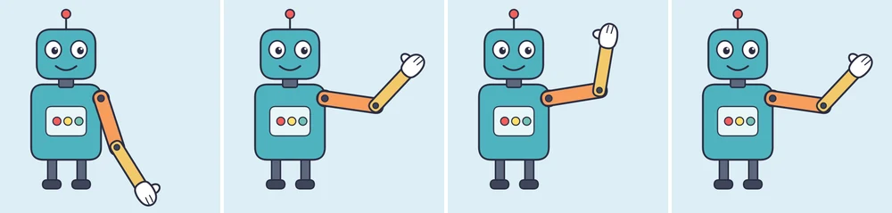
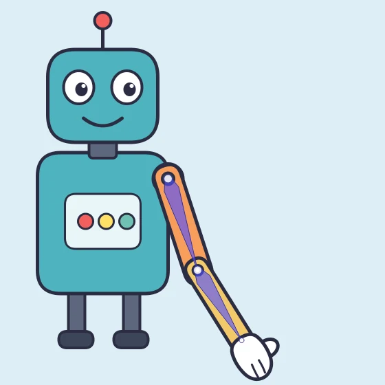
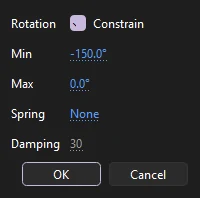

Tutorials
Bones between symbols
Join a robot's upper arm, forearm and hand with the Bone tool, keep its elbow bending one way, and pose it waving on a few frames.
This page is also a lesson inside Phoenix: choose and start Bones between symbols, and Phoenix points at each control as you go. It takes about 8 minutes.
To follow along here instead, download the starting document, robot-arm.fla, and open it with .

Bones join separate pieces so they move as one limb: pull the hand and the elbow and shoulder bend to follow. This is called inverse kinematics.
The robot's arm is three graphic symbols, each on a layer of its own: Upper arm, Forearm and Hand. Each layer runs for 48 frames, two seconds.
1. Choose the Bone tool
Press M, or click the Bone tool in the toolbox.
2. The first bone
Drag from the shoulder, the dark bolt at the top of the orange upper arm, down to the elbow, the bolt where the yellow forearm begins, and let go there.
A bone runs from where you press to where you let go, and joins the symbol you pressed on to the one you let go over. Phoenix moves both pieces to a new layer, Armature_1.
3. The second bone
Now drag from the middle of the forearm to the wrist, where the hand begins, and let go there.
The new bone starts at the elbow, the forearm's joint, wherever on the forearm you press, and joins the hand to the chain.

4. Keep the elbow bending one way

With the Bone tool still chosen, click the forearm's bone, the slim purple shape over the forearm, without dragging. The Joint Rotation and Spring window opens for the elbow, the joint at the bone's top end.
Check Constrain, set Min to -150 and Max to 0, and click OK. The angles are measured from the upper arm, so the elbow can now fold only one way, as a real one does.
5. Go to frame 12
Press V for the Selection tool. In the timeline, click frame 12 of the Armature_1 layer.
6. Raise the arm
Drag the forearm's bone by its end near the hand, up and to the right, until the hand is level with the robot's head.
The hand follows the cursor and the elbow and shoulder turn to reach it. Frame 12 becomes a pose, a keyframe for the whole arm, and Phoenix fills in the frames before it.
7. Wave
Click frame 24 of Armature_1. Drag the end of the forearm's bone up and a little to the left, so the hand leans in over the robot's head.
8. Copy the first wave
Click frame 12 of Armature_1 and choose . The same commands are on the menu you get by right-clicking a frame of an armature layer.
9. Paste it on frame 36
Click frame 36 of Armature_1 and choose . The arm leans out again, so the hand waves back and forth.
10. Play it
Press Enter, or click the play button in the timeline header. The robot raises its arm and waves.
What you did
You joined three symbols with two bones, limited a joint and posed the arm on three frames. Each bone, each pose and each change of limits is one step to undo.
Bones can be added at any time: drag from any piece already in the armature to another symbol, and one piece can branch into several bones, as a hand into fingers. also has Insert Pose, to make a frame a pose without moving it, and Clear Pose, to take one away.
For everything this tutorial touches on, see Building an armature, Joint limits and Pose commands.